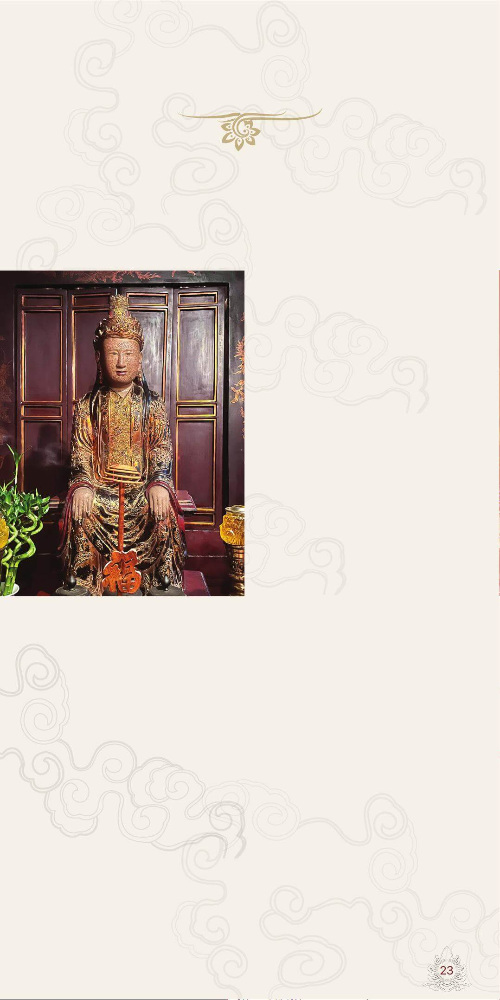

23
C
hính sử ghi là Dương Hậu, có nghĩa là Hoàng Hậu họ Dương.
Theo Hồ sơ khoa học về đình Mỹ Hạ, xã Gia Thủy, huyện
Nho Quan, tỉnh Ninh Bình cho biết Thái hậu tên là Dương
Vân Nga, con gái ông Dương Thế Hiển ở vùng đất thuộc huyện
Nho Quan, tỉnh Ninh Bình.
Dương Vân Nga là người phụ
nữ tiêu biểu trong lịch sử Việt
Nam. Sử sách chép lại, khi
vua Đinh Tiên Hoàng băng
hà, Đinh Toàn 6 tuổi lên ngôi
Hoàng đế. Nhân cơ hội đó, nhà
Tống lăm le xâm lược, nước ta
trong tình thế “ngàn cân treo
sợi tóc”, ông vua 6 tuổi chưa
đủ uy tín và tài năng để gánh
vác sứ mệnh của giang sơn.
Tổ quốc đang cần một người
anh hùng tài đức để chèo lái
con thuyền Đại Cồ Việt ra khỏi
cơn binh lửa. Trước tình hình
đó, Thái hậu Dương Vân Nga đã hội triều để bàn kế hoạch chống
giặc, sau lời đề cử của ba quân tướng sĩ, Thái hậu đã quyết định
trao ngôi báu cho người tướng tài Lê Hoàn lên ngôi Hoàng đế để
Lê Hoàn chuẩn bị cuộc kháng Tống, bình Chiêm giữ nước.
Năm 982, sau khi kháng Tống bình Chiêm ca khúc khải hoàn,
Lê Hoàn đã quyết định lập Vân Nga làm Hoàng hậu. Về việc này,
các sử gia phong kiến phê phán Dương Vân Nga, nhưng khi đặt
Dương Vân Nga vào bối cảnh của thời đại, càng nổi lên một tấm
gương sáng về tinh thần yêu nước. Thái hậu đã trao toàn bộ sự
nghiệp của Tổ quốc cho người tướng tài, đó là sự lựa chọn sáng
suốt, một quyết định quan trọng bậc nhất của giờ phút lịch sử để
tỏ rõ ý chí quyết tâm chống giặc. Việc làm đó phù hợp với lòng
mong mỏi của quân dân.
Thái hậu
Dương Vân Nga